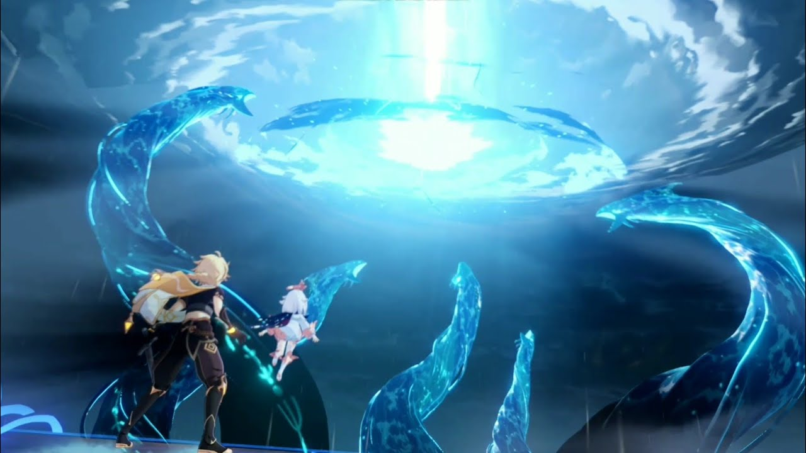
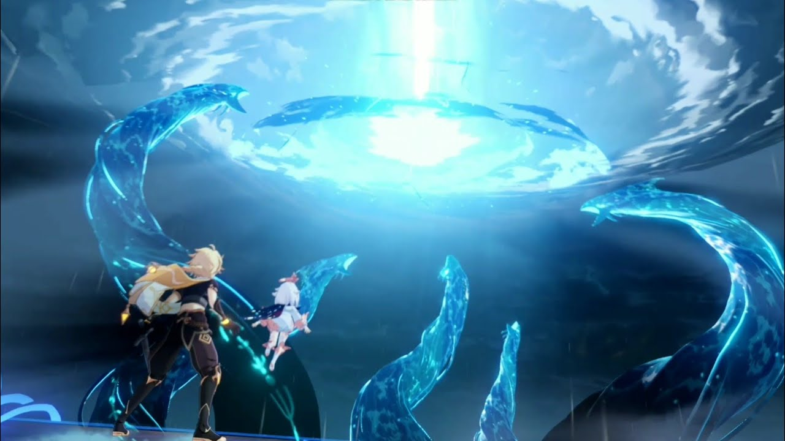

Liyue Harbor

Wangshu Inn
Mondstadt City
Windrise
【"A city of freedom that lies in the northeast of Teyvat. From amongst mountains and wide-open plains, carefree breezes carry the scent of dandelions — a gift from the Anemo God, Barbatos — across Cider Lake to Mondstadt, which sits on an island in the middle of the lake."】
“The City of Freedom, the Crown of the North, the Romantic City of Pastorals — these are names heralded by poets and artists alike for the renowned city of Mondstadt. I am devoted to poetry, music, wine, and festivities as much as the next bard; they are literally and metaphorically the sustenance of my life……
Starfell Plains exhibits great vitality in the spring breeze. The trails and roads have sprung to life with flourishing flora, like Lamp Grass and Sweet Flowers……
Stone steps lead up to a towering Cathedral, serving as the highest landmark in the city. The Cathedral's immediate surroundings feature an unworldly serenity, quite the juxtaposition with the bustling marketplace only a few blocks away……
Good night. May the Anemo Archon, the protector of Mondstadt, be my muse, and gift me with wondrous rhymes at dawn.”
Dawn Winery
-Mondstadt is inspired by mainly German culture as well as some other Northern European culture.“Mondstadt” literally means “Moon City” in German.
-Culture-wise and landscape-wise Mondstadt closely resembles Germany's Rhineland-Palatinate state. Wine culture dominates this region for 2000 years.
This is the first nation Traveler stepped foot on in the world of Tevyat. After waking up, Paimon decided to lead the way to the closest city nearby-- Mondstadt. After touching the Statue of Anemo, the Traveler received the power of anemo, and they spotted a huge green dragon flying through the sky.
Upon chasing, Paimon and Traveler spotted both the dragon and a stranger who tried to comfort the huge dragon. But the newfound power of the Traveler alerted the dragon, and the stranger also fled away. Not long after they arrived at the City of Mondstadt, the green dragon they had sighted, called “Stormterror" by the locals, started to attack the city and formed huge storms.
The story starts here…
Liyue Harbor
Wangshu Inn
【"A bountiful harbor that lies in the east of Teyvat. Mountains stand tall and proud alongside the stone forest, that, together with the open plains and lively rivers, make up Liyue's bountiful landscape. Just how many gifts from the Geo God lie in wait amongst the rocks of Liyue's mountains?"】
“Liyue Harbor, the greatest trading port in all of Teyvat, already meant wealth and prosperity to everyone in our caravan. Though it was a long time ago, the memory of the bustling streets, noisy crowds, and the wonders lying on the shop shelves are all still so vivid to me.
I can still remember the mysterious and enticing scents calling out to me from the snack stalls…
Liyue is a harbor city surrounded by mountains on three sides. Beyond the mountains inland, there are vast foothills, plains, fords, and abundant mines full of precious ores….
Even now, Liyue's exquisite crafts are still prized by people across the continent…
Follow the edge of the lake west, and you will see two towering cliffs, serving as a natural boundary that separates Liyue and Mondstadt.”
Qingce Village
-Liyue is a nation that’s based on the real life country, China, and most of the Liyue culture & landscape are using China as reference.
-Liyue (璃月 Líyuè) literally means "Glazed Moon" in Chinese. It can also be translated as “Jade Moon”.
-璃月 (Líyuè) is a near homophone of 礼乐 (lǐyuè), "rites and music", a word that represents the Confucian aspect of the traditional Chinese philosophy and culture.
-The Moonchase Festival in Liyue is based on the real life Chinese festival Mid-autumn Festival, or “Moon Festival”.
After hearing that The Geo Archon, Rex Lapis will come to Liyue during the Rite of Descension this year, Traveler and Paimon head off to the Liyue Harbor to meet this God before he leaves. They two just arrived at the right time for the ceremony. As one of the Liyue Qixing, Ningguang, summons Rex Lapis, he appears dead before the entire crowd.
She orders the Millelith to apprehend all suspects, the Traveler included since they are not from Liyue and was too close to the center. Traveler and Paimon attempt to sneak out of the crowd, but accidentally alert the Millelith, and soon are surrounded by them…
 

Inazuma City

Chinju Forest
【"An Isolated Archipelago Far East of Teyvat. Overcome endless thunderstorms and set foot on the islands of red maple and cherry blossoms. On winding shores and towering cliffs, and in forests and mountains full of secrets, witness the Eternity pursued by Her Excellency, the Almighty Narukami Ogosho."】
“The first time I went to Inazuma was not long ago after the Vision Hunt Decree arrived. The day I arrived at this land of eternity I saw the most beautiful setting sun slowly disappearing from the sky as I walked into the city of Ritou… The tense atmosphere here made this city cold and dim, the feeling of helplessness like so long before…
Inazuma City, located on Narukami Island, one of the six islands that made up this isolated nation. This is Inazuma's most lively and prosperous area, where most of Inazuma's population lives…
As I went up to the top, Tenshukaku appeared in my eyes, the palace where the Raiden Shogun resides and rules over Inazuma…
Is that the eternity she is looking for?"
Ritou
-Inazuma is a nation that’s based on Japanese culture and landscape (such as surrounded by seas) the word “Inazuma” literally means “thurdener” in Japanese.
-The Sakoku Decree of Inazuma and collection of Visions (Vision Hunt Decree) parallels the real-life sakoku policy under the Japanese Tokugawa shogunate.
The next nation Traveler and Paimon plan to visit is Inazuma, an isolated island far from Liyue Harbor. They had heard that Electro Archon had enacted the “Vision Hunt Decreed” not long ago, and the whole nation was closed from the outside world-- no one are allowed to step in this land, or to get out of it.
Beidou, from the Crux, offered help to bring them across the sea into this closed nation. They met a wandering samurai named Kaedehara Kazuha who himself fled from Inazuma and currently helps Beidou in the Crux.
Heavy storms lay in front, the Land of Eternity is full of danger and mystery, what does eternity mean to their God- Raiden Shogun?